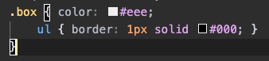

자손 선택자는 부모 선택자 안에 중첩으로 작성!
자식 선택자는 부모 선택자 안에 중첩으로 작성! > 먼저 쓰고 속성들을 작성함
가상 선택자(hover, nth-child, nth-of-type 등)는 중첩으로 작성! &: 다음 가상 선택자를 작성하고 난 뒤 속성들을 작성함
다중 class 혹은 특정 요소에 class가 붙었을 때는 경우는 해당 요소 하위(&.class명) 혹은 해당 요소의 부모 요소 하위(.class명 -> 앞에 어떤 것도 붙지 않으면 자손 선택자가 됨)에 작성